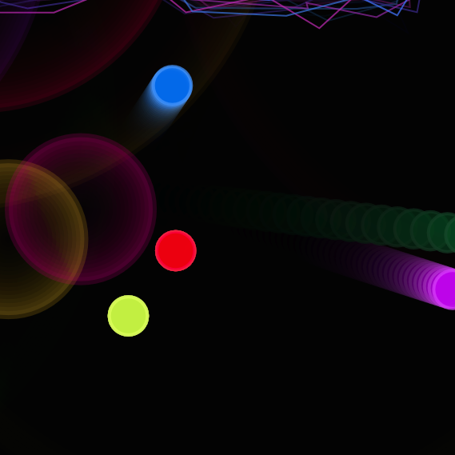
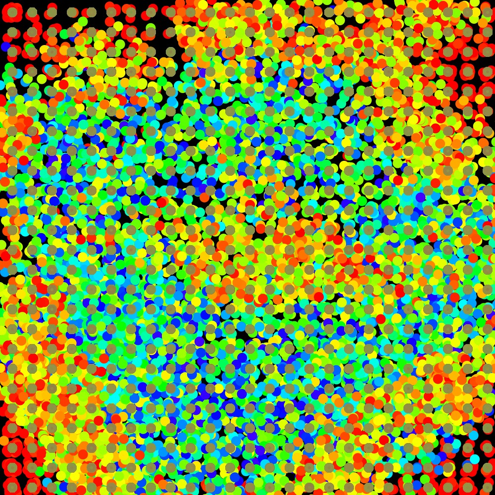

How I learned to code

During the first semester, I and my team created a game for any web-browser making use of p5.js, a library for JavaScript. In the game multiple people could join in with their smartphones, to control their own little dot on the screen via their phones' acceleration sensors and gyroscope. The idea was simple: slamming your opponents out of the playing zone and try to be the last player standing.
I should mention that the main focus of the study program during the first semester lay on learning Java. Since that is not very exciting to look at, I have decided to only put the visually interesting things into my portfolio. Nevertheless, we learned about Design Patterns, using Git or Computational Thinking in general. During the first semester, I also created a text-based adventure game, for example.

As a followup of the previously mentioned project, I used p5 again, to create my own spin on the basic idea of a painting application, which included randomization of colors, random draw positions and the ability to reset.
Also during the first semester, we had a course about Generative Design. The students created beautiful artifacts. Below, you can see what I came up with for my very first coding portfolio.
What I mainly took from the course was the idea that coding can be straightforward if you use the right tools and have the right guidance. For me, that guidance was Daniel Shiffman, aka the Coding Train.